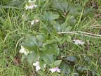
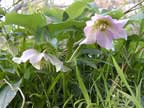
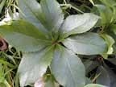
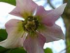
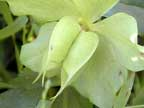
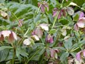

Hellebore
Helleborus spp
Other names
Stinking hellebore, green hellebore, black hellebore, Christmas rose, setterwort, bear’s foot, etc, etc.
Description
Upright palmate leaves (c 100mm diameter) growing from a bulb, flowers green to pink / purple depending on variety, in winter.
Similar plants
Many spp of hellebore are grown in NZ, those pictured are H. niger (Christmas rose).
Distribution
Common in gardens.
Toxin
They contain high concentrations of ranunculin, and some cardiac glycosides as well (helleborein, helleborin). All parts are toxic.
Species affected
Cattle and sheep. Most cases are from garden material being thrown into paddocks. Poisoning is rare in NZ. People have been poisoned by drinking milk from cows which have eaten hellebore.
Clinical signs acute
Abdominal pain. Acute diarrhoea black with blood and mucus. Frequent straining and urination. Slow irregular pulse, convulsions and death. People vomiting and diarrhoea.
Clinical signs chronic
Post mortem signs
Inflammation with occasional ulceration or haemorrhage of the gastrointestinal tract.
Diagnosis
History and clinical signs.
Differential diagnosis
Treatment
Gastrointestinal protectorants.
Prognosis
Prevention
References
Conner H.E. The Poisonous Plants In New Zealand. 1992. GP Publications Ltd, Wellington
Cooper M R, Johnson A W. Poisonous Plants and Fungi in Britan: Animals and Human Poisoning. Her Majesty’s Stationary Office. London. 1998
Holliman, A. Milton, D Helleborus foetidus poisoning of cattle. [Correspondence] Veterinary Record. 1990. 127: 13, 339 340.
Johnson, C.T. and Routledge, J.K. Suspected Helleborus viridis poisoning of cattle. Veterinary Record, 1971, 89, 202
Parton K, Bruere A.N. and Chambers J.P. Veterinary Clinical Toxicology, 2nd ed. 2001. Veterinary Continuing Education Publication No. 208
|  Christmas rose |
 |
|
|
 |
 |
|
|
 |
||
|
|
 |
|